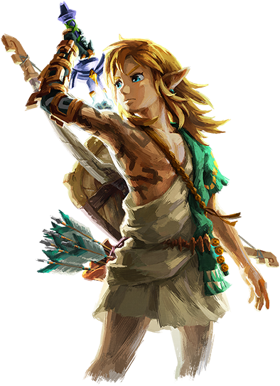

Te aguarda un épico viaje en el que recorrerás las tierras y los vastos cielos de Hyrule en The Legend of Zelda: Tears of the Kingdom para Nintendo Switch.
En esta secuela de The Legend of Zelda: Breath of the Wild, te embarcarás en una arriesgada misión para descubrir la causa del estremecedor evento que ha sumido el reino en el caos.
Aquí tienes algunos ejemplos de cómo Link puede aprovechar sus nuevas habilidades de manera creativa, lo que a veces te deparará más de una sorpresa.